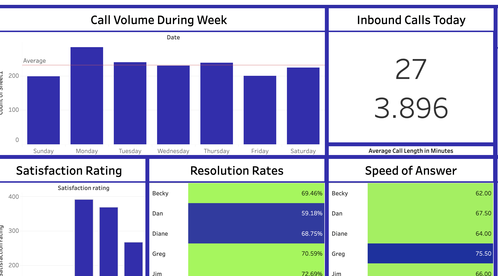
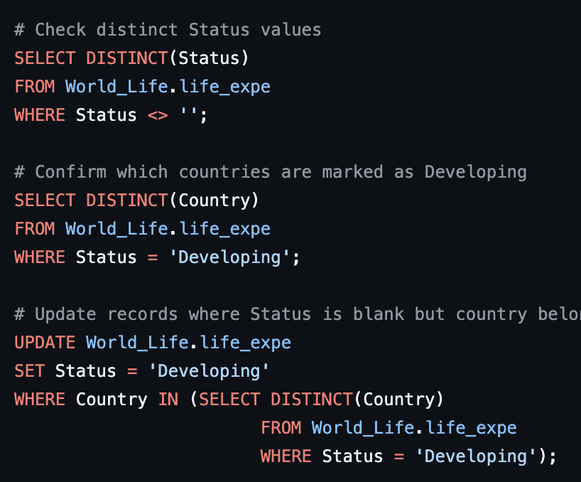
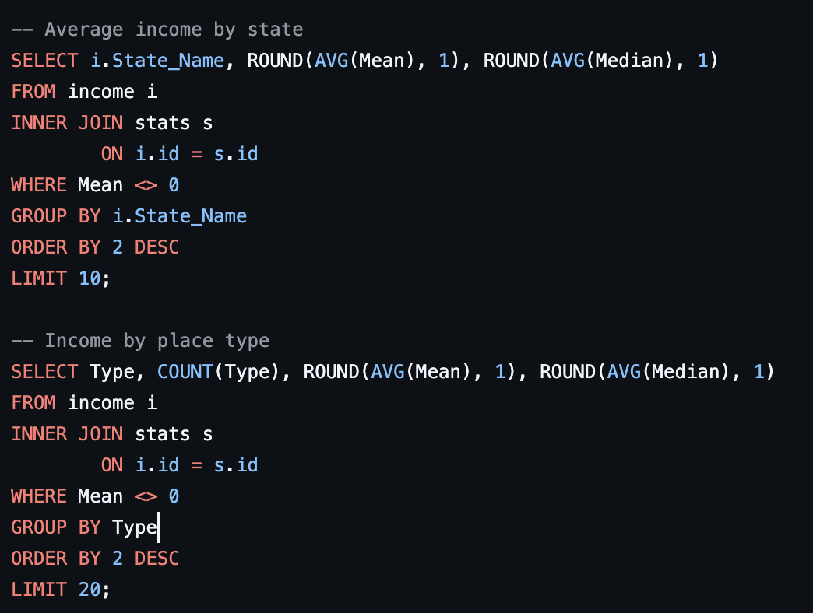
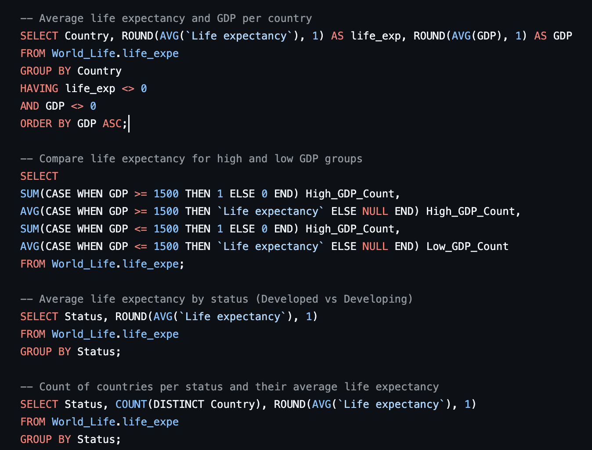
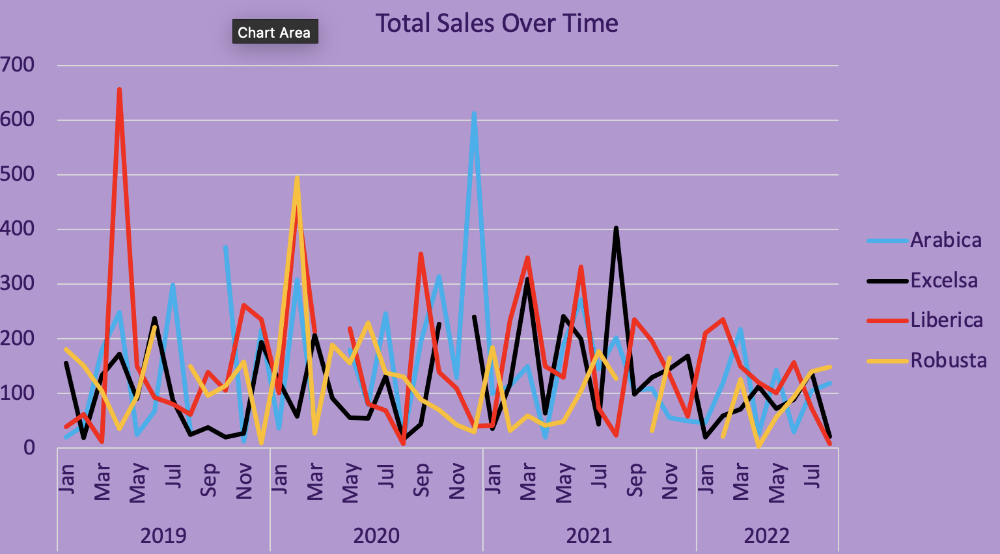

I built this HR dashboard in Power BI to explore patterns in employee attrition.
I cleaned and shaped the data using Power Query, then broke it down by department, age group, education, gender, salary, and job role.
The goal was to understand where most people were leaving and spot any trends that could help explain why.


I built this dashboard in Tableau to keep track of how a call center team was performing.
It shows things like how many calls come in each day, how fast agents are answering, how many calls they are resolving,
and how satisfied customers are.
It made it easy to spot who was doing well and where there might be room to improve.

I cleaned the World Life Expectancy dataset by removing duplicate records based on country and year.
I also fixed missing values in the "Status" column by checking how each country was labeled elsewhere and applying the correct category (Developed or Developing).
To handle gaps in life expectancy data,
I filled in missing values using the average from the year before and after for the same country.

I explored U.S. household income data using SQL by combining two tables: one with location details and another with income stats.
I looked at which states and cities had the highest average and median incomes, compared income levels across different types of places like cities, boroughs, and villages,
and filtered out incomplete or unreliable data.
This gave me a clearer picture of how income varies across the country and by community type.

I used R to analyze electric vehicle data from Washington State, with a focus on Tesla.
The project looks at Tesla’s market share, top-selling models, and estimated revenue using sales counts and pricing data.
I also compared Tesla to other EV brands based on range and MSRP, analyzed trends in BEV vs. PHEV adoption over time, and identified the most common utility providers among Tesla owners.
Data was cleaned and transformed using dplyr and tidyverse

I used SQL to analyze global life expectancy trends and how they relate to factors like GDP, BMI, adult mortality, and development status.
The project highlights differences between countries,
shows how life expectancy has changed over time, and reveals patterns tied to economic and health indicators

I used Excel to clean and organize coffee sales data, pulled in info from different tables using XLOOKUP,
and built pivot tables and a dashboard to explore trends across time, products, and countries.